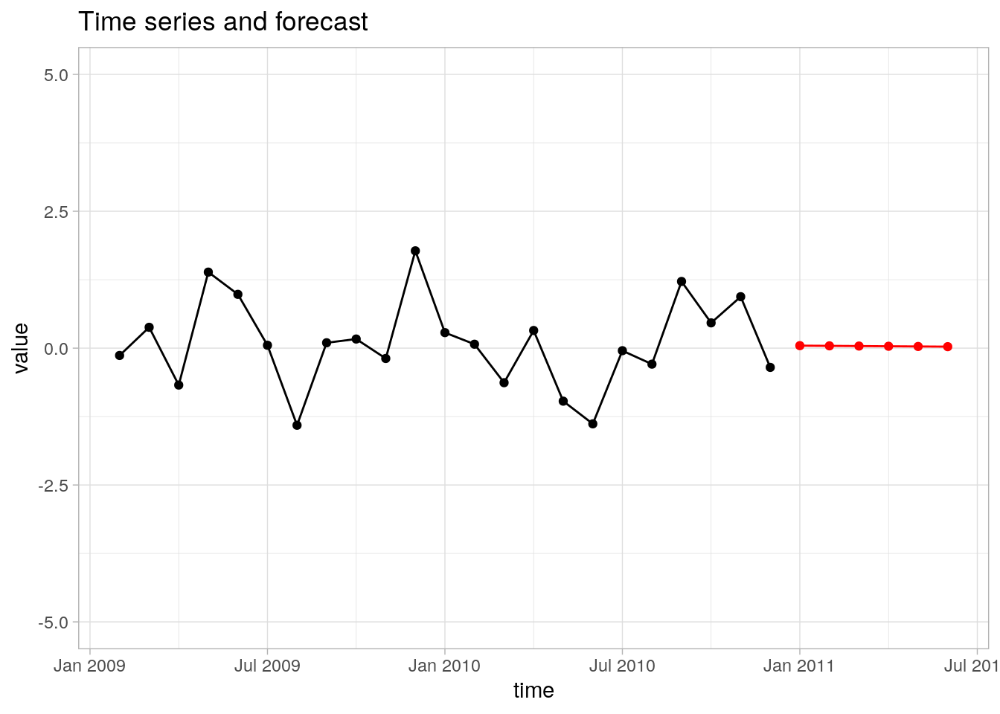

library(R6)
library(xts)
library(zoo)
library(tibble)
library(ggplot2)
timeSeries <- R6Class(
classname = "timeSeries",
public = list(
times = NA,
values = NA,
table = NULL,
operations = list(),
models = list(),
paths = list(),
initialize = function(times, values) {
self$times <- times
self$values <- values
self$table <- xts::xts(x = self$values, order.by = self$times)
},
getTimes = function() {
self$times
},
getValues = function() {
self$values
},
getTimeSeries = function() {
self$table
},
opsAppend = function(...) {
ops <- list(...)
for (name in names(ops)) {
self$operations[[name]] <- ops[[name]]
}
},
opsRemove = function(...) {
keys <- list(...)
for (key in keys) {
self$operations[[key]] <- NULL
}
},
opsList = function() {
data.frame(id = seq_along(self$operations), name = names(self$operations))
},
modelsAppend = function(...){
model <- list(...)
for (name in names(model)) {
self$models[[name]] <- model[[name]]
}
},
modelsRemove = function(...) {
keys <- list(...)
for (key in keys) {
self$models[[key]] <- NULL
}
},
modelsList = function() {
data.frame(id = seq_along(self$models), name = names(self$models))
},
pathsAppend = function(pathName, operations, model){
self$paths[[pathName]] <- list(operations = operations, model = model)
},
pathsRemove = function(...) {
pathNames <- list(...)
for (pathName in pathNames) {
self$paths[[pathName]] <- NULL
}
},
pathsList = function() {
paths_df <- do.call(rbind, lapply(names(self$paths), function(name) {
data.frame(
id = which(names(self$paths) == name),
name = name,
operations = paste(self$paths[[name]]$operations, collapse = " → "),
model = self$paths[[name]]$model,
stringsAsFactors = FALSE
)
}))
paths_df
},
pathsRun = function(pathName) {
if (!(pathName %in% names(self$paths))) {
stop("Path not found.")
}
path <- self$paths[[pathName]]
result <- self$table
for (op in path$operations) {
result <- self$operations[[op]](result)
}
prediction <- self$models[[path$model]](result)
prediction
}
)
)3. R6Class
Projekt wykonany w ramach zajęć Zaawansowane programowanie w języku R.
Opis projektu
Projekt dotyczy rozszerzonej reprezentacji szeregu czasowego. W języku R jest wiele możliwości reprezentowania szeregów czasowych. Podstawowe klasy to ts i mts. Klasy, które rozszerzają te klasy to zoo i xts. Wszystkie te klasy reprezentują jedynie dane a więc dane dotyczące czasu i wartości. W tym projekcie chcemy do danych dołożyć operacje, które są wykonywane na szeregach czasowych oraz metody, które tworzą prognozy.
Technicznie, zadaniem w projekcie jest zdefiniowanie klasy timeSeries w modelu obiektowym R6, która na podstawie wektora określającego czas i wektora wartości, inicjalizuje instancję klasy. Metoda new powinna przyjmować dwa argumenty: times, który przyjmuje wektor czasów (i tutaj możemy wykorzystać dowolną klasę reprezentującą datę i czas, np. Date czy yearmon) oraz values, który przyjmuje wektor wartości.
Klasa musi oferować następujące podstawowe metody.
Metoda
getTimes, która zwraca podany wektor czasów.Metoda
getValues, która zwraca podany wektor wartości.Metoda
getTimeSeries, która zwraca szereg czasowy. W rozwiązaniu proszę wykorzystać klasęxts.
Projekt jest zatem rozszerzeniem klasy xts.
Powyższe metody są typowymi fundamentalnymi metodami związanymi z szeregiem czasowym.
Moja definicja funkcji
Przykłady
Przykład 1
Poniższy przykład tworzy bardzo prosty szereg czasowy i pokazuje działanie opisanych powyżej metod.
Przykład pokazuje inicjalizację obiektu klasy timeSeries oraz wykorzytanie podstawowych metod. Na tej podstawie tworzony jest prosty wykres szeregu czasowego.
### Tworzenie danych do szeregu czasowego:
ts <- yearmon(2009) + (0:(5 * 12 - 1)) / 12
vs <- seq_along(ts) / 5 + cumsum(rnorm(5 * 12))
### Inicjalizacja obiektu
y <- timeSeries$new(times = ts, values = vs)
### Pobranie wartości
y$getValues() [1] 1.40299014 -0.06865385 -1.28452416 -0.41722174 -1.65432266
[6] -1.54925355 -1.68270335 -0.76989575 -2.19405222 -2.00920813
[11] -2.91899221 -3.31505721 -2.85287333 -3.75705960 -5.59745602
[16] -6.24575496 -5.65556040 -8.01378794 -8.57721820 -9.36524834
[21] -9.83693253 -10.23744080 -9.99108469 -9.09249668 -7.00971296
[26] -7.28613041 -6.09962978 -4.88289655 -6.48142351 -5.22511786
[31] -5.11715712 -4.32611456 -1.96211906 -3.65275001 -3.45970608
[36] -3.42334828 -3.62828059 -3.23292068 -3.00507828 -1.59623767
[41] -1.22222499 -2.22116125 -1.74809932 -0.24132442 1.68444533
[46] 1.84331901 1.69314317 3.38990614 4.85331300 5.21851366
[51] 5.55826272 4.59783680 3.41371470 2.31213674 2.85977886
[56] 2.58321746 2.79742814 3.62906110 6.28529414 7.21541129### Pobranie wektora czasów
y$getTimes() [1] "Jan 2009" "Feb 2009" "Mar 2009" "Apr 2009" "May 2009" "Jun 2009"
[7] "Jul 2009" "Aug 2009" "Sep 2009" "Oct 2009" "Nov 2009" "Dec 2009"
[13] "Jan 2010" "Feb 2010" "Mar 2010" "Apr 2010" "May 2010" "Jun 2010"
[19] "Jul 2010" "Aug 2010" "Sep 2010" "Oct 2010" "Nov 2010" "Dec 2010"
[25] "Jan 2011" "Feb 2011" "Mar 2011" "Apr 2011" "May 2011" "Jun 2011"
[31] "Jul 2011" "Aug 2011" "Sep 2011" "Oct 2011" "Nov 2011" "Dec 2011"
[37] "Jan 2012" "Feb 2012" "Mar 2012" "Apr 2012" "May 2012" "Jun 2012"
[43] "Jul 2012" "Aug 2012" "Sep 2012" "Oct 2012" "Nov 2012" "Dec 2012"
[49] "Jan 2013" "Feb 2013" "Mar 2013" "Apr 2013" "May 2013" "Jun 2013"
[55] "Jul 2013" "Aug 2013" "Sep 2013" "Oct 2013" "Nov 2013" "Dec 2013"### Pobranie szeregu czasowgo (klasa xts)
head(y$getTimeSeries(),10) [,1]
Jan 2009 1.40299014
Feb 2009 -0.06865385
Mar 2009 -1.28452416
Apr 2009 -0.41722174
May 2009 -1.65432266
Jun 2009 -1.54925355
Jul 2009 -1.68270335
Aug 2009 -0.76989575
Sep 2009 -2.19405222
Oct 2009 -2.00920813### Stworzenie przykładowego wykresu
ggplot(
data = tibble(time = y$getTimes(), value = y$getValues()),
mapping = aes(x = time, y = value)
) +
geom_line() +
geom_point() +
labs(title = "Example of a time series") +
theme_light()
Przykład 2
Podstawowe metody, opisane powyżej, nie wyczerpują operacji, które chcemy dodać do szeregu czasowego. Oczywiście katalog potencjalnych operacji nie jest skończony więc nie możemy dodać metod reprezentujących wszystkie potencjalne operacje. Z tego powodu chcemy mieć możliwość dodawania dowolnych operacji i następnie wiązania tych operacji. W pierwszej kolejności chcemy zbudować prosty system zarządzania operacjami. Na potrzeby tego projektu, operacja na szeregu czasowym, to dowolna funkcja, która jako argument przyjmuje szereg czasowy (klasa xts) i zwraca szereg czasowy (ponownie klasa xts). Tak więc musimy mieć następujące metody.
Metoda
opsAppenddo dodawania operacji. Składania tej metody powinna być identyczna ze składnią funkcjilist. Konieczne jest podanie kluczy jednoznacznie identyfikującychMetoda
opsRemovedo usuwania operacji. Metoda przyjmuje dowolną liczbę stringów, które są kluczami usuwanych operacji.Metoda
opsList, która listuje operacje, które aktualnie są w liście dodanych operacji.
Poniższy przykład pokazuje metody dodawania, listowania i usuwania operacji.
W przykładzie tworzymy nowy obiekt, następnie dodajemy, listujemy i usuwamy operacje.
### Tworzenie danych do szeregu czasowego:
ts <- yearmon(2009) + (0:(5 * 12 - 1)) / 12
vs <- seq_along(ts) / 5 + cumsum(rnorm(5 * 12))
### Inicjalizacja obiektu
y <- timeSeries$new(times = ts, values = vs)
### Dodawanie operacji na szeregu czasowycvh
y$opsAppend(
differencing = function(x) { diff(x = x, lag = 1, differences = 1) },
logs_abs = function(x) { log(abs(x)) },
na_omit = na.omit
)
### Listowanie operacji
y$opsList() id name
1 1 differencing
2 2 logs_abs
3 3 na_omit### Usuwanie operacji
y$opsRemove("logs_abs")
### Listowanie operacji
y$opsList() id name
1 1 differencing
2 2 na_omitPrzykład 3
Kolejnym elementem, które musi się znaleźć w klasie jest model predykcji. Na potrzeby tego projektu, przez model predkcji będziemy rozumieli dowolną funkcję, która jako argument przyjmuje obiekt klasy xts i zwraca obiekt tej klasy. Ponownie, katalog możliwych modeli predykcji nie jest zamknięty, więc również musimy mieć prosty system zarządzania. W szczególności klasa musi oferować następujące metody.
Metoda
modelsAppend, która pozwala na dodawanie modeli. Składnia tej metody powinna być taka jak funkcjilist. Podobnie jak poporzednio, konieczne jest podanie unikalnych kluczy indetyfikujących modele.Metoda
modelsRemove, która pozwana na usunięcie modeli. Metoda musi przyjmować stringi, które definiują dodane modele.Metoda
modelsList, która listuje dodane modele.
Poniższy przykład pokazuje zastosowanie opisanych metod.
W przykładzie tworzymy nowy obiekt, następnie dodajemy, listujemy i usuwamy modele.
### Tworzenie danych do szeregu czasowego:
ts <- yearmon(2009) + (0:(5 * 12 - 1)) / 12
vs <- seq_along(ts) / 5 + cumsum(rnorm(5 * 12))
### Inicjalizacja obiektu
y <- timeSeries$new(times = ts, values = vs)
### Dodawanie prostego modelu liniowego
y$modelsAppend(
linear_prediciton = function(x) {
dtemp <- data.frame(
t = seq_along(coredata(x)),
z = coredata(x)
)
m <- lm(formula = z ~ t, data = dtemp)
p <- predict(
object = m,
newdata = data.frame(t = last(dtemp$t) + 1:6)
)
xts(
x = p,
order.by = index(last(x)) + (1:6) * deltat(x)
)
}
)
## Dodawanie modelu identyczności
y$modelsAppend(
identity_prediction = function(x) {
x
}
)
### Listowanie modelu
y$modelsList() id name
1 1 linear_prediciton
2 2 identity_prediction### Usuwanie modelu
y$modelsRemove("identity_prediction")
### Listowanie modelu
y$modelsList() id name
1 1 linear_predicitonPrzykład 4
Same operacje oraz modele nic nie robią. Kolejne zadanie to wiązanie operatorów i kończenie ich modelami predykcji. Powiązanie takie ma postać szereg czasowy → operator 1 → operator 2 → … → operator n → model. Każde takie powiązanie nazywamy dalej ścieżką obliczeniową (path). Klasa musi mieć narzędzia do tworzenia i zarządzania takimi ścieżkami obliczeniowymi. Klasa musi oferować następujące metody.
Metoda
pathsAppendmusi pozwalać dodawać ścieżki obliczeniowe. Metoda ta powinna przyjmować trzy argumenty. ArgumentpathName, który jest stringiem i jest unikalny. Argumentoperations, który jest wektorem stringów definiujących dodane operacje. Argumentmodel, który jest stringiem definiującym model predykcji. Razem metoda pozwala definiować ścieżkę obliczeniową.Metoda
pathsRemovemusi pozwalać na usuwanie poprzednio zdefiniowanych ścieżek obliczeniowych. Metoda przyjmuje dowolną liczbę stringów definiujących ścieżki obliczeniowe.Metoda
pathsList, która listuje zdefiniowane ścieżki.Metoda
pathsRun, która przyjmuje argumentpathName, który jest stringiem definiującym ścieżkę.
Metoda ta wykonuje obliczenia dla zdefiniowanej ścieżki a więc w kolejności zdefiniowanej w ścieżce stosuje funkcje definiujące operacje i na końcu model obliczeniowy. Wynikiem jest więc prognoza dla szeregu czasowego.
library(dplyr)
detach("package:dplyr", unload = TRUE)
### Tworzenie danych do szeregu czasowego:
ts <- yearmon(2009) + (0:(2 * 12 - 1)) / 12
vs <- seq_along(ts) / 10 + cumsum(rnorm(2 * 12))
### Inicjalizacja obiektu
y <- timeSeries$new(times = ts, values = vs)
### Dodawanie operacji na szeregu czasowycvh
y$opsAppend(
differencing = function(x) { diff(x = x, lag = 1, differences = 1) },
logs_abs = function(x) { log(abs(x)) },
na_omit = na.omit
)
### Dodawanie prostego modeli liniowego
y$modelsAppend(
linear_prediciton = function(x) {
dtemp <- data.frame(
t = seq_along(coredata(x)),
z = coredata(x)
)
m <- lm(formula = z ~ t, data = dtemp)
p <- predict(
object = m,
newdata = data.frame(t = last(dtemp$t) + 1:6)
)
xts(
x = p,
order.by = index(last(x)) + (1:6) * deltat(x)
)
}
)
## Dodawanie modelu identycznościowego
y$modelsAppend(
identity_prediction = function(x) {
x
}
)
### Listing operacji i modeli
y$opsList() id name
1 1 differencing
2 2 logs_abs
3 3 na_omity$modelsList() id name
1 1 linear_prediciton
2 2 identity_prediction### Dodawanie ścieżki z modelem liniowym
y$pathsAppend(
pathName = "linear with differencing",
operations = c("differencing", "na_omit"),
model = "linear_prediciton"
)
### Dodawanie ścieżki z modelem identycznościowym / pozwala na
### zobaczenia co dokładnie wchodzi do modelu predykcji
y$pathsAppend(
pathName = "identity with differencing",
operations = c("differencing", "na_omit"),
model = "identity_prediction"
)
### Listowanie zdefiniowanych ścieżek
y$pathsList() id name operations model
1 1 linear with differencing differencing → na_omit linear_prediciton
2 2 identity with differencing differencing → na_omit identity_prediction### Obliczanie zdefiniowanych ścieżek
z <- y$pathsRun(pathName = "identity with differencing")
zF <- y$pathsRun(pathName = "linear with differencing")
### Tworzenie wykresu na podstawie wyników
ggplot(
data = tibble(time = index(z), value = coredata(z)),
mapping = aes(x = time, y = value)
) +
geom_line() +
geom_point() +
geom_line(data = tibble(time = index(zF), value = coredata(zF)), color = "red") +
geom_point(data = tibble(time = index(zF), value = coredata(zF)), color = "red") +
coord_cartesian(ylim = c(-5, 5)) +
labs(title = "Time series and forecast") +
theme_light()